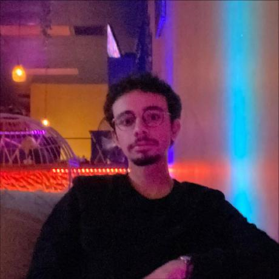

Computer Science @ UCF | AI & Computer Vision Researcher
University of Central Florida
Presented a novel loss function for geographic feature extraction, exceeding traditional Triplet Loss by 10x in spatial accuracy.
Founded and led a PyTorch-based project for campus-wide location recognition.

Deep Learning and Computer Vision.
UCF
B.S. Computer Science